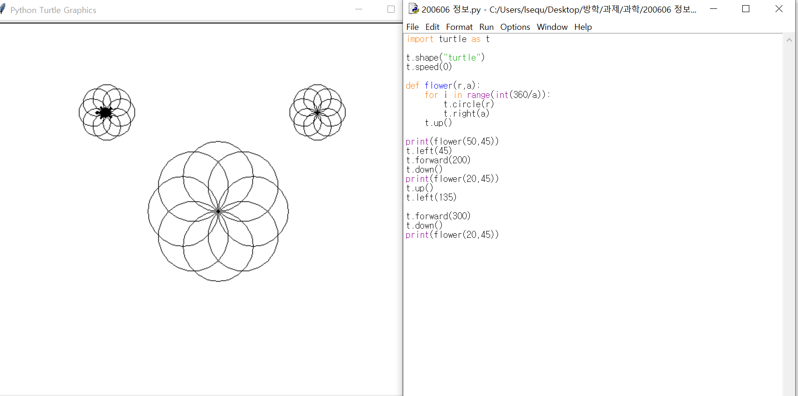

프로그래밍
▶ 컴퓨터의 프로그램을 작성하는 일
▶ 일반적으로는 프로그램의 작성 방법의 결정, 코딩(coding), 에러 수정 등의 작업 모두를 가리키지만 코딩만을 가리킬 때도 있음.
나무위키
프로그램
▶ 지시 사항들이 나열된 순서
위키백과
코딩
▶ 하나 이상의 관련된 추상 알고리즘을 특정한 프로그래밍 언어를 이용해 구체적인 컴퓨터 프로그램으로 구현하는 기술을 말한다.
나무위키
알고리즘
▶ 문제를 해결하기 위한 절차나 방법
위키백과
파이썬
▶ 고급 프로그래밍 언어
▶ 예시 사진

나무위키
C언어
▶유닉스 운영 체제에서 사용하기 위해 개발한 프로그래밍 언어이다.
위키백과
유닉스
▶ 교육 및 연구 기관에서 즐겨 사용되는 범용 다중 사용자 방식의 시분할 운영체제이다
위키백과
운영체제
▶ 컴퓨터 자원을 효율적으로 관리하기 위한 시스템, 공통된 소프트웨어 플랫폼, 컴퓨터 응용 프로그램 관리자